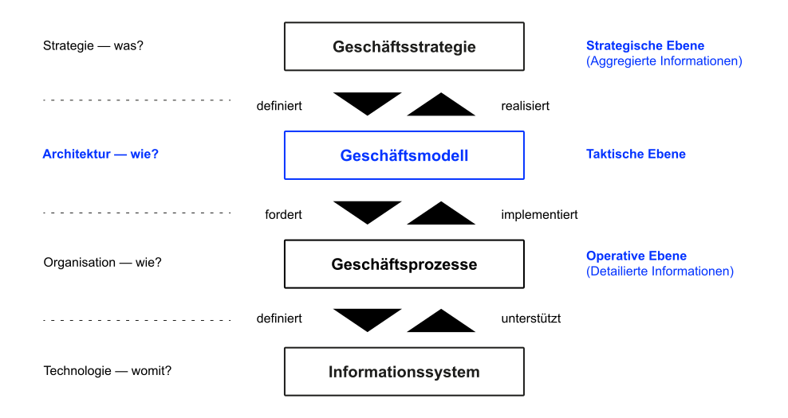

K10 Digitale Geschäftsmodelle
Grundzüge der Wirtschaftsinformatik (GWI)
Motivation
Information technology is at the core of how you do your business and how your business model itself evolves. Stya Nadella (2016), CEO von Microsoft
In den vergangenen Kapiteln haben wir uns intensiv mit den Grundkonzepten des Informationsmanagements sowie mit Informationssystemen und deren wesentlichen Komponenten, Geschäftsprozessen und Strategien beschäftigt. Wir haben dabei gelernt, dass viele Unternehmen ohne Informationstechnologie nicht (mehr) funktionsfähig sind. In diesem Kapitel betrachten wir abschließend ein weiteres, zunehmend durch IT beeinflusstes Konzept auf der strategischen Ebene: das Geschäftsmodell.
Lernergebnisse
Nach dieser Einheit können Sie
- den Begriff Geschäftsmodell erläutern und diesen in das Business Engineering-Modell einordnen,
- die wesentlichen Dimensionen eines Geschäftsmodells nennen und diese anhand von Beispielen erläutern,
- die wesentlichen Treiber hinter digitalen Geschäftsmodellen nennen,
- die zunehmende Relevanz digitaler Geschäftsmodelle anhand dieser Treiber zeigen,
- wesentliche Muster digitaler Geschäftsmodelle identifizieren und
- die Relevanz des Informationsmanagements für digitale Geschäftsmodelle erläutern.
Begriffsklärung
Business Engineering
Zur Wiederholung und Einordnung: Unter Business Engineering versteht man die ingenieurmäßige Vorgehensweise bei der Gestaltung eines Unternehmens.
Business Engineering überspannt den kompletten Prozess von der Strategiefindung und der Ableitung von Geschäftsmodellen bis zur optimalen Gestaltung der Abläufe sowie zugehöriger Anwendungssysteme (Abts und Mülder 2017; Leimeister 2021).
Das Business Engineering Modell kann somit um die Ebene des Geschäftsmodells ergänzt werden (Al-Debei und Avison 2010).
In der Praxis sind die Begriffe Strategie und Geschäftsmodell oft nicht eindeutig abgegrenzt, was zu einem erschwerten Begriffsverständnis und oftmals auch Verständnisschwierigkeiten beiträgt. Der wissenschaftliche Diskurs zeigt jedoch, dass die Strategie und das Geschäftsmodell eines Unternehmens nicht identisch sind, sondern sich voneinander unterscheiden.
Eine Unternehmensstrategie legt langfristige Ziele sowie grundsätzliche Maßnahmen fest, diese zu erreichen. Basis für die langfristige Ausrichtung eines Unternehmens sind sowohl dessen interne Stärken und Schwächen als auch die unternehmensexternen Chancen und Risiken der Umwelt. Die Stärken eines Unternehmens sollen mit den Chancen der Umwelt in Einklang gebracht werden, wobei gleichzeitig die eigenen Schwächen verringert und die externen Risiken vermieden werden sollen. Kurzum: Strategie beschreibt, wie sich ein Unternehmen gegenüber Konkurrenten durchsetzen kann.
Dahingegen beschreibt das Geschäftsmodell auf abstrakter Ebene wie die Unternehmensressourcen so koordiniert werden, so dass Wert geschaffen wird oder in Zukunft geschaffen werden soll. Aus dem Geschäftsmodell lassen sich dann die spezifischen Geschäftsprozesse ableiten. Diese beschreiben im Detail, mit Hilfe von Tätigkeitsketten aus verschiedenen Inputfaktoren ein spezifisches Ergebnis (Output) erzeugt wird.
Strategien unterscheiden sich von Geschäftsmodellen also insbesondere darin, dass Strategien zukunftsorientiert sind und eine langfristige Perspektive verfolgen, wohingegen Geschäftsmodelle eher gegenwartsbezogen sind und die aktuelle Logik zur Erzeugung von Wert beschreiben. Eine Strategie kann zu unterschiedlichen Geschäftsmodellen führen, ein Geschäftsmodell ist deshalb nur eine mögliche Abbildung der Strategie.
Das Unternehmen, die eine gleiche Strategie verfolgen, diese durch unterschiedliche Geschäftsmodelle umsetzen können zeigt sich unter anderem bei Fluggesellschaften. Fluggesellschaften wie Ryanair und Eurowings verfolgen eine Wettbewerbsstrategie, die als Preisführerschaft bezeichnet wird (low-cost Airlines). Die Unternehmen unterscheiden sich aber in der Art und Weise, wie sie ihr Geschäftsmodell konzipiert haben. Unterschiede lassen sich z.B. hinsichtlich des Partnernetzwerkes (Eurowings ist Teil der Lufthansa Gruppe), des Codesharings, sowie des Kundenservices feststellen.
Geschäftsmodell
Ein Geschäftsmodell beschreibt die grundlegende Logik, mit der ein Unternehmen zusammen mit ihren Lieferanten und Partnern Wert für Kunden erzeugt und Gewinne erzielt (Teece 2010).
Ein Geschäftsmodell ist digital, wenn Veränderungen digitaler Technologien mit fundamentalen Auswirkungen auf die Logik der Wertgenerierung sowie auf die erzielten Einnahmen eines Unternehmens einhergehen (Veit u. a. 2014).
Geschäftsmodelle haben vier wesentliche Dimensionen: das Wertversprechen (value proposition), die Wertschöpfungsarchitektur (value architecture), das Partnernetzwerk (value network) und das Ertragsmodell (value finance).
- Das Wertversprechen beschreibt, welchen Nutzen ein Unternehmen seinen Kunden durch seine Produkte und/oder Dienstleistungen stiftet. Diese Dimension beschreibt, welche Kunden(segmente) anvisiert werden, was die Produkte und Dienstleistungen für die Kunden wertvoll macht und wie die Kunden gewonnen und gehalten werden sollen. IT spielt in diese Dimension eine zunehmend entscheidende Rolle.
- Die Wertschöpfungsarchitektur beschreibt, wie das Wertversprechen organisatorisch und technologisch durch das Unternehmen erstellt wird, also wie die Organisation, die Ressourcen und die Kernkompetenzen eines Unternehmens zusammenspielen.
- Das Partnernetzwerk nimmt eine unternehmensübergreifende Perspektive ein und beschreibt, wie Kunden und weitere Partner in die Wertschöpfungserstellung eingebunden sind und zusammenarbeiten. Diese Dimension zeigt damit auch die Rollen der verschiedenen Akteure und wie Wert zwischen diesen ausgetauscht wird.
- Das Ertragsmodell beschreibt, wie das Unternehmen Einnahmen generiert und welche Kosten diesen gegenüberstehen.
| Dimension | Klassisches Geschäftsmodell | Digitales Geschäftsmodell |
|---|---|---|
| Wertversprechen | (Physisches) Produkt und Services; limitierte Kundenintegration | Datengetriebene Services generieren Wert; tiefe Kundenintegration |
| Wertschöpfungsarchitektur | Traditionelle Wertschöpfungsprozesse („value chain“) und Kanäle | Datenbasierte und Plattform-orientierte Wertschöpfung |
| Partnernetzwerk | Akteure entlang der Wertschöpfungskette und zusätzliche Dienstleister | Erweitertes Ökosystem (Wettbewerber, Politik, Wissenschaft, etc.) |
| Finanzstruktur | Kosten für Ressourcen und Dienstleistung; Erlöse über Verkauf | Aufbau und Betrieb der Plattform; Erlöse im „as-a-service“-Bezahlmodell |
Visualisierung

Man kann durchaus die Frage stellen, welchen Nutzen die Erweiterung des Modells um das Konzept des Geschäftsmodells hat. Reicht es nicht aus, sich auf die Strategie und die Geschäftsprozesse zu fokussieren?
Richtig ist, dass es Schnittmengen zwischen Geschäftsstrategie, Geschäftsmodell und Geschäftsprozessen gibt. Jedoch stellen Geschäftsstrategie, -modell und -prozesse verschiedene Informationsebenen dar, die für unterschiedliche Zwecke nützlich sind. Das Geschäftsmodell kann als eine Schnittstelle zwischen der Unternehmensstrategie und den Geschäftsprozessen sowie der unterstützenden Informationssysteme betrachtet werden.
Die Geschäftsstrategie stellt die Entscheidungen dar, die Unternehmen treffen, um besser abzuschneiden als ihre Konkurrenten. Das Geschäftsmodell beschreibt, wie die Teile eines Unternehmens zusammenspielen, um dieses Ziel zu erreichen.
Insbesondere in einem Umfeld, das sich durch ein hohes Maß an Komplexität und schnellem Wandel kennzeichnet, sind Unternehmen verstärkt darauf angewiesen, das Potenzial eines Unternehmens (Organisation und Technologie) mit dem Plan zur Realisierung von wirtschaftlichen Werten (Strategie) zu verbinden. Diese Brücke stellt das Geschäftsmodell dar.
Das Geschäftsmodell wird somit zu einer Art Blaupause für die Art und Weise, wie ein Unternehmen aus neuen Dienstleistungen, Produkten oder Innovationen Wert schafft. Analog zu den Überlegungen im Kapitel IT-Management lässt sich daraus schlussfolgern, dass heute nicht die Technologien, sondern die sinnvolle Nutzung und Kombination dieser Technologien den Erfolg von Unternehmen bestimmen.
| Geschäftsmodell | Strategie | |
|---|---|---|
| Orientierung | Kundennutzen und (kooperativen) Wertschöpfung | Wettbewerb, Umfeld und Branchenlogik |
| Zielsetzung | Umsetzung von Strategien; nachhaltige Unternehmenssicherung; kontinuierliche Anpassung/Innovation des Geschäftsmodells | Aufbau und Aufrechterhaltung von Wettbewerbsvorteilen, um den Erfolg zu sichern; Differenzierung gegenüber dem Wettbewerb; Anpassung an das sich ständig wandelnde Umfeld |
| Inhalt | Beschreibung der Wertschöpfung über Wertversprechen, Wertschöpfungsarchitektur, Partnernetzwerk und Ertragsmodell; Anpassungsmöglichkeiten an interne und externe Veränderungen | Langfristiges Ziel und Richtung; umfassende Ist-Analyse und bewusste Planung der zukünftigen Aktivitäten unter Berücksichtigung externer und interner Faktoren (bspw. SWOT); Ableitung unterschiedlicher Geschäftsmodell-Entwürfe; Entscheidungen zur Finanzierung/Ressourcen-Allokation |
Innovation
Begriffsbestimmung
Als Geschäftsmodellinnovation werden bewusst gestaltete, neuartige, nicht-triviale Änderungen am Geschäftsmodell eines Unternehmens, also den Elementen und/oder deren Zusammenspiel, bezeichnet (Foss und Saebi 2017).
Geschäftsmodellinnovationen werden sowohl von extern (z. B. durch neue Technologien) und/oder intern (z.B. durch neue Strategien) ermöglicht und angetrieben.
Wettbewerb
Der Wettbewerb wird in Zukunft nicht zwischen Produkten und Prozessen stattfinden, sondern zwischen Geschäftsmodellen (Gassmann, Frankenberger, und Csik 2013, p. 4)
Geschäftsmodellinnovationen sind im digitalen Zeitalter kritisch, um langfristig erfolgreich zu bleiben.
Treiber
Viele Firmen, die lange Jahre für ihre innovativen Produkte und Prozesse bekannt waren, haben in den vergangenen Jahren plötzlich ihren Wettbewerbsvorteil verloren (Gassmann, Frankenberger, und Csik 2013).
Dies liegt oft daran, dass die Unternehmen es versäumt haben, ihr Geschäftsmodell an die sich ändernden Umweltbedingungen des digitalen Zeitalters anzupassen (Matzler, Bailom, und Eichen 2016):
- Intangibilisierung und Grenzauflösung (Ort, Zeit, Ressourcenzugriff)
- Sinkende Grenz- und Transaktionskosten
- Zunehmende Personalisierungsmöglichkeiten
Auslöser und Ermöglicher von Geschäftsmodellinnovationen im digitalen Zeitalter:
- Intangibilisierung
- Wandlung physischer Produkte und ortsgebundener Services hin zu digitalen Abbildern, die Orts- und Zeit-unabhängig sind
- Grenzauflösung
- Digitale Geschäftsmodelle kennen keine analogen Grenzen und Regeln und lösten alte Muster auf (Branchen, Länder, etc.)
- Netzwerkeffekte
- Der Nutzen der Produkte erhöht sich mit steigender Nutzerzahl; dieser Effekt wird durch die Reichweite digitaler Angebote begünstigt
- Sinkende Grenzkosten
- Produktion, Vervielfältigung und Verbreitung zusätzlicher digitaler Einheiten erhöht die Kosten nur marginal
- Sinkende Transaktionskosten
- Digitalisierung verschiebt Nutzenvorteile von integrierten Geschäfts-modellen hin zu transaktionsbasierten Geschäftsmodellen
- Demonetisierung
- Aufgrund sinkender Kosten können Leistungen oft „gratis“ angeboten werden; monetärer Wert wird dann durch die Kundenbasis und die erzeugten Daten erzeugt
- Personalisierung
- Digitale Produkte können einfacher an individuelle Bedürfnisse angepasst und weiterentwickelt werden (Inhalt, Funktion, Leistung; Upgrades)
- Ressourcenzugriff
- Die Digitalisierung erleichtert den flexiblen Zugriff auf nicht-genutzte Ressourcen und Kapazitäten („sharing economy“), die dann vermietet werden können
Muster
Definition
Muster sind hinreichend abstrakte Varianten zur Lösung genereller Problemstellungen, die für einen konkreten Fall konkretisiert und auf den jeweiligen Kontext angepasst werden müssen.
Bei Geschäftsmodellmustern oder -typen handelt es sich im Wesentlichen um generelle Beschreibungen der Funktionsweisen von Geschäftsmodellen, deren Ausgestaltung in den Dimensionen sowie deren Zusammenwirken ähnlich ist.
Gassmann, Frankenberger, und Csik (2013) haben in ihrem Business Model Navigator 55 Muster von Geschäftsmodellen identifiziert. Einige wenige wesentliche Muster sind im Folgenden vorgestellt.
Digital Commerce Platform
Plattformstrategien gehören zu den erfolgreichsten Mustern der digitalen Wirtschaft. Sie bringen auf einer Plattform unterschiedliche Nutzergruppen zusammen, die dort miteinander interagieren. Auf einer Digital Commerce Platform werden wie auf einem Marktplatz Waren und Dienstleistungen angeboten.
- Werteversprechen
- Effizienter Zugang zu physischen Waren und klassischen Dienstleistungen über das Internet
- Wertschöpfung
- Aufbau effizienter Marktplätze mit breiter Nutzerbasis, Skaleneffekte
- Ertragsmodell
- Marge, Provision
Beispiele
- Amazon: Webshop sowie B2C und B2B Marketplace mit eigener Logistik (teilweise inkl. der last Mile)
- Gorillas: Lebensmittellieferservice, Bestellung per Smartphone-App, Lieferung per E-Bike, expandiert in großen Städten (Unicorn)
- About You: Online Fashion Retailer, der sowohl selbst verkauft als auch die Technologie-Plattform und das Fulfillment anbietet
Peer-to-peer Platform
Als Peer-to-peer werden meist Transaktionen zwischen Privatleuten bezeichnet (bspw. Verleih von Gegenständen oder Verkauf von Dienstleistungen oder Informationen). Das Unternehmen fungiert dabei als eine Art Mittler, welcher für die sichere und effiziente Abwicklung der Transaktion verantwortlich ist.
- Werteversprechen
- Einfacher Austauschs von Produkten und Dienstleistungen zwischen Privatpersonen
- Wertschöpfung
- Überbrückung unterschiedlicher Präferenzen; Netzwerkeffekte
- Ertragsmodell
- Nutzungsgebühr/Provision, Abonnement, Mitgliedschaft
Beispiele
- airbnb: Online-Marktplatz für private Unterkünfte, Fokus auf Gastfamilien/ Ferienwohnungen
- shpock: Online-Marktplatz für den privaten Kauf/Verkauf von Dingen in der (unmittelbaren) Umgebung
- Etsy: E-Commerce Plattform für den Kauf und Verkauf von handgemachten Produkten, Vintage und Künstlerbedarf
Digital Services
Dieses Muster beschreibt, dass Produkte vollständig digitalisiert werden und ausschließlich über digitale Kanäle „on-demand“ bereitgestellt werden.
Bei diesem Muster bietet ein Unternehmen ein Basisprodukt oft kostenlos („free“) oder zu reduzierten Preisen an. Das Unternehmen monetarisiert dann die Daten der Nutzer und/oder bietet erweiterte Services zu höheren Preisen an („premium“)
- Werteversprechen
- Bereitstellung bisher analoger Dienstleistungen in digitaler Form (Orts- und Zeit-Unabhängigkeit)
- Wertschöpfung
- Effiziente Problemlösung durch digitale Angebote; Skaleneffekte
- Ertragsmodell
- Nutzungsgebühr, Abonnement, Mitgliedschaft, Freemium
Beispiele
- Udemy: Online-Lernplattform für Massive Open Online Courses (MOOCs); Alternative: LinkedIn Learning
- N26: Deutsche Direktbank, die sich auf das mobile Banking spezialisiert hat und keine physischen Filialen betreibt
Physical-digital Ecosystem
In diesem Geschäftsmodellmuster bieten Unternehmen physische Produkte oder klassische Dienstleistungen an, die um digitale Dienstleistungen ergänzt werden („value-add Services“)
- Werteversprechen
- Kombination physischer Produkte/klassischen Dienstleistungen mit digitalen Services, die gemeinsam einen einzigartigen Mehrwert schaffen
- Wertschöpfung
- Aufbau eines hybriden Ökosystems, Tech und Beziehungen, Datenauswertung, Skaleneffekte
- Ertragsmodell
- Nutzungsgebühr, Mitgliedschaft
Beispiele
- Apple: Hard- und Software-Hersteller, verbindet Hardware und Dienste zu einem geschlossenen hybriden Ökosystem
- TESLA: Kombiniert Elektrifizierungs-Produkte mit ergänzenden (digitalen) Services (bspw. Autopilot,Supercharger-Netzwerk)
✏️ Aufgaben
A1: Grundbegriffe
Erläutern Sie in der Kleingruppe reihum die Bedeutung der folgenden Begriffe.
- Business Engineering
- Strategie
- Geschäftsmodell
- Digitales Geschäftsmodell
- Partnernetzwerk
- Grenzkosten
- Transaktionskosten
A2: Geschäftsmodellmuster
Stellen Sie sich gegenseitig die Geschäftsmodellmuster vor, die im Skript beschrieben sind (jeweils einer erklärt der Gruppe ein Muster) und überlegen Sie, wie das Partnernetzwerk gestaltet sein muss.
Finden Sie außerdem jeweils ein weiteres Beispiel und beschreiben Sie, welche Technologien und/oder Rahmenbedingungen, die das digitale Zeitalter prägen, dieses Geschäftsmodell ermöglichen.
A3: Lock-in
Recherchieren Sie, was unter „Lock-in“ verstanden wird. Suchen Sie ein Unternehmen, dass diesen Mechanismus nutzt und beschreiben Sie die Strategie und das Geschäftsmodell.
Fällt Ihnen ein Unternehmen ein, dass eine ähnliche Strategie verfolgt, aber ein Geschäftsmodell ohne „Lock-in“ implementiert hat?
A4: WhatsApp
Beschreiben Sie das Geschäftsmodell von WhatsApp oder Peleton. Nutzen Sie hierfür mindestens die in der Vorlesung vorgestellten typischen Elemente (Werteversprechen, Wertschöpfungsarchitektur, Partnernetzwerk, Ertragsmodell).
Können Sie das Geschäftsmodell einem der vorgestellten Muster zuordnen?
A5: Hausaufgabe
Arbeiten Sie sich durch die Vorlesungsinhalte (Skripte, Notizen, Übungsblätter, Big Pictures) und identifizieren Sie Verständnislücken. Posten Sie Ihre Verständnisfragen auf Moodle, damit wir möglichst viele davon in der abschließenden Vorlesung diskutieren können.